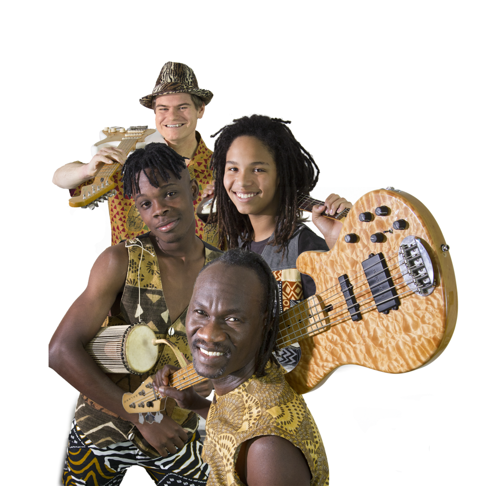

In some countries, women are still not equal in law. Even where they are legally equal to men, it is common for decisions to be taken by male heads of households or male local chiefs and leaders.
It is often the case that traditionally women have fewer, if any, rights of inheritance. This leads to difficulties accessing land or finance. But there are exceptions, such as in northern regions of Mozambique, where certain groups are matrilineal.
Music and Culture

Africa is divided into a great number of ethnic cultures.For example,clothing,cuisine,music etc.The continent's cultural regeneration has also been an integral aspect of post-independence nation-building on the continent, with a recognition of the need to harness the cultural resources of Africa to enrich the process of education, requiring the creation of an enabling environment in a number of ways. In recent times, the call for a much greater emphasis on the cultural dimension in all aspects of development has become increasingly vocal.
Traditional Sub-Saharan African music is as diverse as the region's various populations. The common perception of Sub-Saharan African music is that it is rhythmic music centered on the drums, and indeed, a large part of Sub-Saharan music, mainly among speakers of Niger–Congo and Nilo-Saharan languages, is rhythmic and centered on the drum. Sub-Saharan music is polyrhythmic, usually consisting of multiple rhythms in one composition. Dance involves moving multiple body parts. These aspects of Sub-Saharan music were transferred to the new world by enslaved Sub-Saharan Africans and can be seen in its influence on music forms as Samba, Jazz, Rhythm and Blues, Rock & Roll, Salsa, and Rap music.[15]